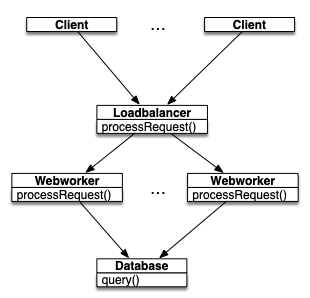
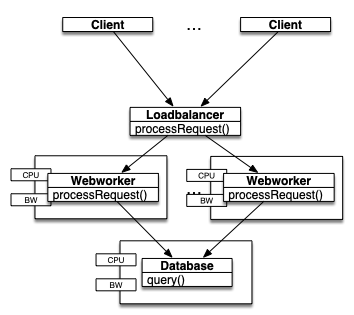
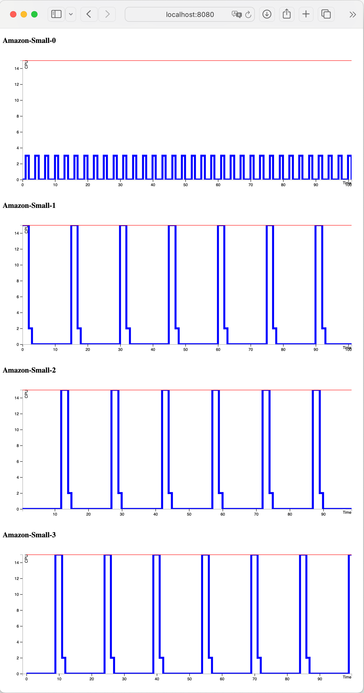
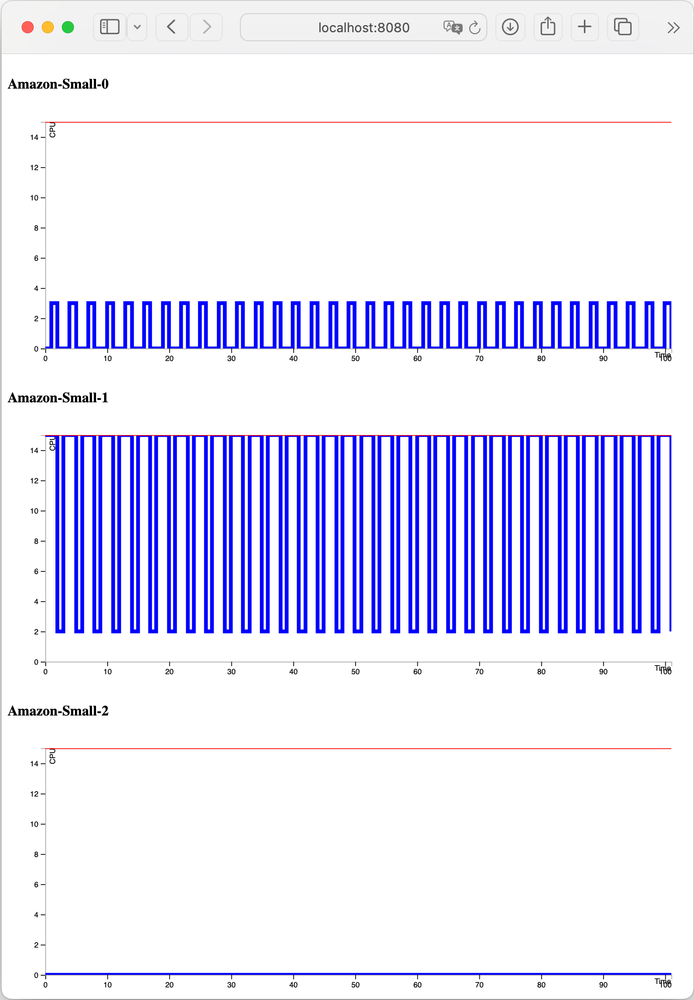
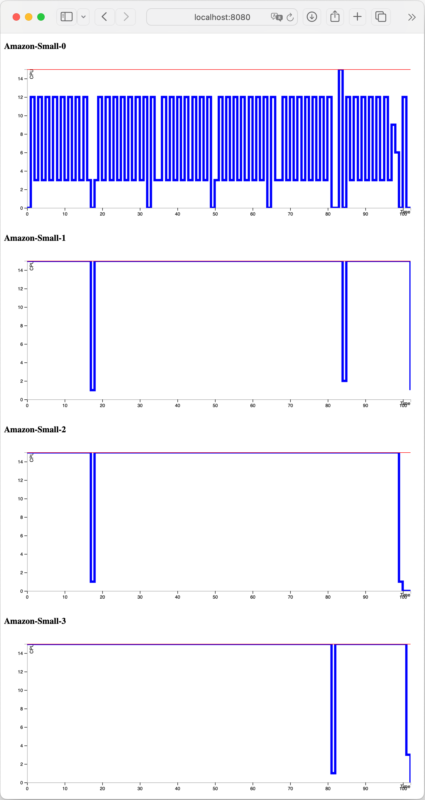

Modeling resources in ABS¶
This example shows a high-level model of a typical three-layer system serving client requests. The components are one load balancer, multiple web workers and an underlying database server. The model also contains one or more clients, which send requests to the load balancer.
The complete code to this example is here: https://github.com/abstools/absexamples/blob/master/collaboratory/examples/resource-modeling/.
The basic architecture is as follows:

Three-layer web app model¶
The Loadbalancer class receives incoming messages from clients,
chooses a Webworker object and routes the request to it. The
worker, in turn, calls the query method of the Database
instance, then returns a result to the client via the load balancer.
Functional model without resources¶
The ABS model discussed in this section is here: basic-model-no-resources.abs.
We use a basic model to implement the control flow of a typical web
request, skipping any application logic. Clients access the service by
calling processRequest() on a LoadBalancer isntance which
keeps a pool of Webworker components. All of them access the same
Database object. The interface structure is as follows:
interface Database {
String query();
}
interface Webworker {
String processRequest();
}
interface Loadbalancer {
String processRequest();
}
Note that there is no interface for clients, since they do not expose any methods to call from the outside.
We abstract away from most of the processing and are only concerned with
control flow, so the Database implementation returns a constant
string:
class Database implements Database {
String query() {
return "Result";
}
}
In the same vein, the Webworker class models database communication
and local processing:
class Webworker(Database db) implements Webworker {
String processRequest() {
String result = await db!query();
return result + " from " + toString(this);
}
}
The class LoadBalancer fills its pool of Webworker instances on
startup, and routes requests to a free webworker:
class Loadbalancer(Int nWorkers, Database db) implements Loadbalancer {
List<Webworker> workers = Nil;
Unit run() {
Int i = 0;
while (i < nWorkers) {
Webworker w = new Webworker(db);
workers = Cons(w, workers);
i = i + 1;
}
}
String processRequest() {
await length(workers) > 0;
Webworker w = head(workers);
workers = tail(workers);
String result = await w!processRequest();
workers = appendright(workers, w);
return result;
}
}
Each Client instance sends one request per time unit to the
LoadBalancer from its run method:
class Client (Loadbalancer lb) {
Unit run() {
while (timeValue(now()) < 100) {
String s = await lb!processRequest();
println(s + " at " + toString(now()));
await duration(1, 1);
}
}
}
Finally, the main block sets up and starts the model:
{
Database db = new Database();
Loadbalancer lb = new Loadbalancer(5, db);
new Client(lb);
await duration(100, 100);
}
Adding resources to the model¶
We now add resource locations and resource consumption to the model of the previous section.
The ABS model discussed in this section is here: basic-model-resources-v1.abs.
The basic idea is to create objects at resource-carrying locations
(see Deployment components). DeploymentComponent is a
predefined ABS class that models a virtual machine, or in general a
location that supplies computation resources to the cogs running on
it.
Specific parts of the code are annotated with resource costs. Executing these code parts consumes resources, and execution is delayed when the location has run out of resources. Resources are refreshed periodically.
The interesting point is that adding deployment and cost information to an ABS model can be done piecemeal, and is minimally invasive.

Three-layer web app model, with deployment components¶
In the updated example, we deploy the Webworker and Database
objects on a deployment component each. Note that we do not have to
add a deployment component to every new object; we can leave some
parts unspecified or abstract. In the example, we make use of the
CloudProvider class from the standard library, but deployment
components can be directly created as well.
In the main block, we create a CloudProvider instance, tell it the
instance types that are available, and use it to create a deployment
component for running the database on. The [DC: database_c]
annotation creates the fresh Database object on that deployment
component:
{
CloudProvider provider = new CloudProvider("Amazon");
provider!setInstanceDescriptions(map[Pair("Small", map[Pair(Cores, 1), Pair(Speed, 15)])]);
DeploymentComponent database_c = await provider!launchInstanceNamed("Small");
[DC: database_c] Database db = new Database();
Loadbalancer lb = new Loadbalancer(5, db, provider);
new Client(lb);
await duration(100, 100);
provider!shutdown();
}
The LoadBalancer uses the same CloudProvider instance to create
the web workers:
class Loadbalancer(Int nWorkers, Database db, CloudProvider provider) implements Loadbalancer {
List<Webworker> workers = Nil;
Unit run() {
Int i = 0;
while (i < nWorkers) {
DeploymentComponent dc = await provider!launchInstanceNamed("Small");
[DC: dc] Webworker w = new Webworker(db);
workers = Cons(w, workers);
i = i + 1;
}
}
// All other code unchanged ...
}
The Database and Webworker classes now consume resources when
processing requests. Each query call consumes a constant 3 Speed
resources from the database’s deployment component, each
processRequest call to a web worker consumes 16 resources from the
web worker’s deployment component:
class Database implements Database {
String query() {
[Cost: 3] return "Result";
}
}
class Webworker(Database db) implements Webworker {
String processRequest() {
[Cost: 16] String result = await db!query();
return result + " from " + toString(this);
}
}
To run the model on the Java backend, use the following commands:
absc --java basic-model-resources-v1.abs -o basic-model-resources-v1.jar
java -jar basic-model-resources-v1.jar -p 8080
Then, open a browser to the address http://localhost:8080. The output will look similar to this (scroll down in the model API browser output to see more deployment components):

Screenshot of resource consumption over time of the database and 3 webworkers, round-robin scheduling¶
We can see that all deployment components are lightly loaded, and that the load balancer distributes tasks in a round-robin strategy. Since the deployment component has a Speed capacity of 15 but the cost of one processRequest execution is 16, each request takes two time units.
Changing load balancing strategies¶
The ABS model discussed in this section is here: basic-model-resources-v2.abs.
With a one-line change in the load balancer, we can model a different load balancing strategy: we switch from round-robin to a LIFO (stack-based) strategy:
String processRequest() {
await length(workers) > 0;
Webworker w = head(workers);
workers = tail(workers);
String result = await w!processRequest();
workers = Cons(w, workers);
return result;
}
To run the model on the Java backend, run the following commands:
absc --java basic-model-resources-v2.abs -o basic-model-resources-v2.jar
java -jar basic-model-resources-v2.jar -p 8080
Then, open a browser to the address http://localhost:8080. The output will look similar to this (scroll down in the model API browser output to see more deployment components):

Screenshot of resource consumption over time of the database and 2 webworkers, with LIFO scheduling of the load balancer¶
The output shows that one web worker is enough to carry the load of the given client scenario: all web workers except the first one are idle over the course of the simulation.
Changing the client load scenario¶
The ABS model discussed in this section is here: basic-model-resources-v3.abs.
The previous examples showed a load scenario where most machines are idle. We can add more clients to simulate a higher load, with the following main block:
{
CloudProvider provider = new CloudProvider("Amazon");
provider!setInstanceDescriptions(map[Pair("Small", map[Pair(Cores, 1), Pair(Speed, 15)])]);
DeploymentComponent database_c = await provider!launchInstanceNamed("Small");
[DC: database_c] Database db = new Database();
Loadbalancer lb = new Loadbalancer(5, db, provider);
new Client(lb);
new Client(lb);
new Client(lb);
new Client(lb);
new Client(lb);
new Client(lb);
new Client(lb);
new Client(lb);
new Client(lb);
await duration(100, 100);
provider!shutdown();
}
To run the model on the Java backend, run the following commands:
absc --java basic-model-resources-v3.abs -o basic-model-resources-v3.jar
java -jar basic-model-resources-v3.jar -p 8080
Then, open a browser to the address http://localhost:8080. The output will look similar to this (scroll down in the model API browser output to see more deployment components):

Screenshot of resource consumption over time of the database and 2 webworkers, with increased client load¶
In this last example, the database server is running at approximately 50% load, and all 5 web workers are running near capacity.
Further possibilities for resource modeling¶
Note that the scenarios presented in this chapter are somewhat static, but that does not need to be the case:
We can dynamically add deployment components and add and remove worker objects; this can be used to model redeployment at runtime
Cost annotations can be any ABS expression over local variables and class fields that produces a number; this can be used to model varying costs of message processing, either stochastic or as a function of the message payload
The resources available to a deployment component can be increased and decreased; this can be used to model stochastic machine performance decrease, or resource transfer between machines